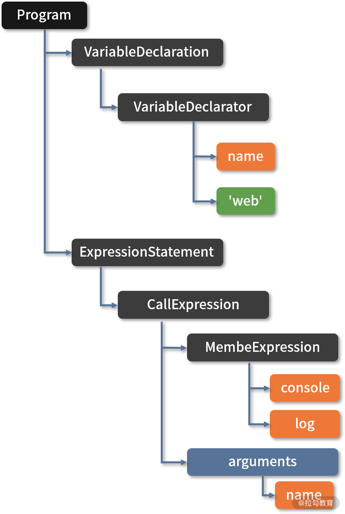
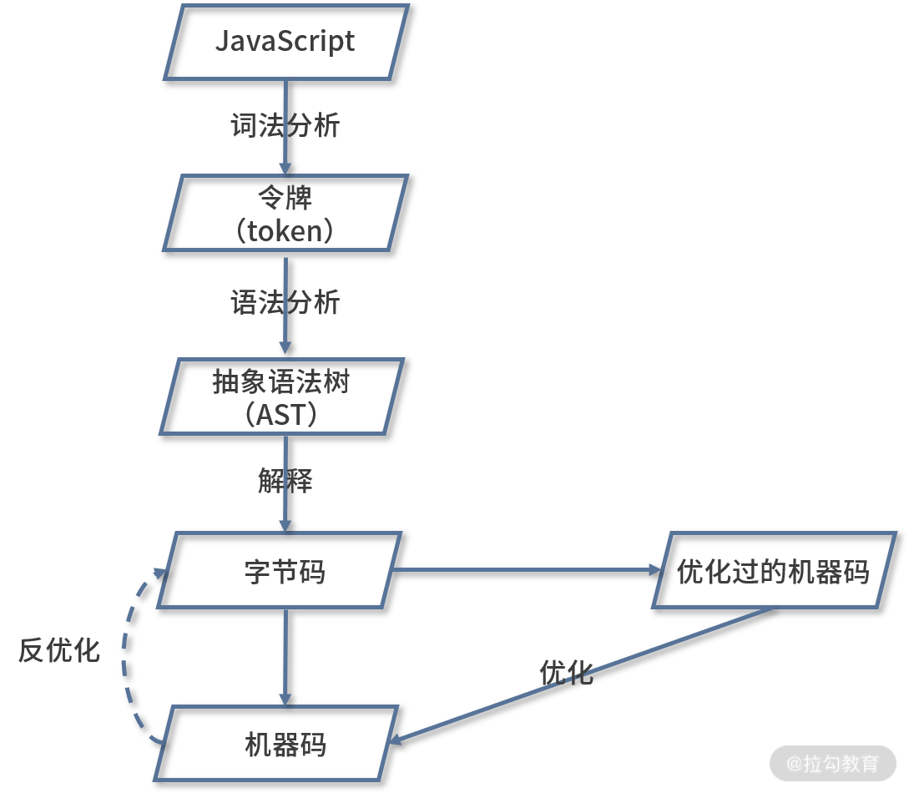
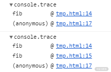
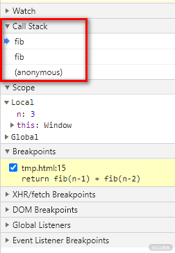
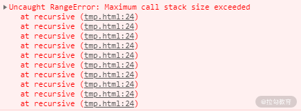
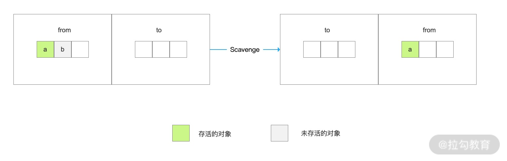
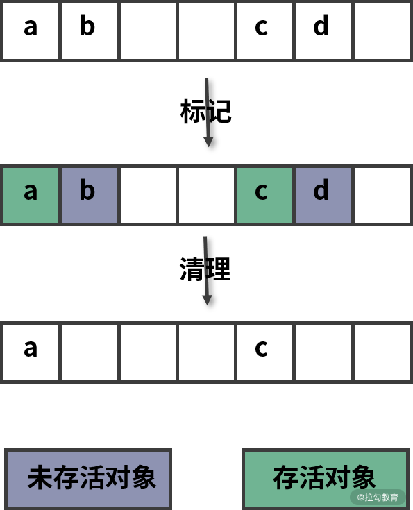

这一节从编译过程和内存管理两个方面带你来探索 JavaScript 引擎的工作机制。
一、编译过程
在“加餐1：手写 CSS 预处理器”中提过编译器的基本工作流程，大体上包括 3 个步骤：解析（Parsing）、转换（Transformation）及代码生成（Code Generation），JavaScript 引擎与之相比大体上也遵循这个过程，可分为解析、解释和优化 3 个步骤。下面我们就以 V8 引擎为例进行讲解。
解析
解析步骤又可以拆分成 2 个小步骤：
- 词法分析，将 JavaScript 代码解析成一个个的令牌（Token）；
- 语法分析，将令牌组装成一棵抽象的语法树（AST）。
下面是一段简单的代码，声明了一个字符串变量并调用函数 console.log 进行打印。
1 | var name = 'web' |
通过词法分析会对这段代码逐个字符进行解析，生成类似下面结构的令牌（Token），这些令牌类型各不相同，有关键字、标识符、符号、字符串。
1 | Keyword(var) |
语法分析阶段会用令牌生成类似下面结构的抽象语法树，生成树的过程并不是简单地把所有令牌都添加到树上，而是去除了不必要的符号令牌之后，按照语法规则来生成。

抽象语法树
解释
在加餐 1 中，我们将 AST 转换成新的 AST，而 JavaScript 引擎是通过解释器 Ignition 将 AST 转换成字节码。字节码是对机器码的一个抽象描述，相对于机器码而言，它的代码量更小，从而可以减少内存消耗。
下面代码是从示例代码生成的字节码中截取的一段。它的语法已经非常接近汇编语言了，有很多操作符，比如 StackCheck、Star、Return。考虑这些操作符过于底层，涉及处理器的累加器及寄存器操作，已经超出前端范围，这里就不详细介绍了。
1 | [generated bytecode for function: log (0x1e680d83fc59 <SharedFunctionInfo log>)] |
优化
解释器在得到 AST 之后，会按需进行解释和执行，也就是说如果某个函数没有被调用，则不会去解释执行它。
在这个过程中解释器会将一些重复可优化的操作（比如类型判断）收集起来生成分析数据，然后将生成的字节码和分析数据传给编译器 TurboFan，编译器会依据分析数据来生成高度优化的机器码。
优化后的机器码的作用和缓存很类似，当解释器再次遇到相同的内容时，就可以直接执行优化后的机器码。当然优化后的代码有时可能会无法运行（比如函数参数类型改变），那么会再次反优化为字节码交给解释器。
整个过程如下面流程图所示：

JavaScript 编译过程
二、内存管理
JavaScript 引擎的内存空间分为堆（Heap）和栈（Stack）。堆和栈是两种不同的数据结构，堆是具有树结构的数组，栈也是数组，但是遵循“先进后出”规则。
栈
栈是一个临时存储空间，主要存储局部变量和函数调用（对于全局表达式会创建匿名函数并调用）。
对于基本数据类型（String、Undefined、Null、Boolean、Number、BigInt、Symbol）的局部变量，会直接在栈中创建，而对象数据类型局部变量会存储在堆中，栈中只存储它的引用地址，也就是我们常说的浅拷贝。全局变量以及闭包变量也是只存储引用地址。总而言之栈中存储的数据都是轻量的。
对于函数，解释器创建了“调用栈”（Call Stack）来记录函数的调用流程。每调用一个函数，解释器就会把该函数添加进调用栈，解释器会为被添加进的函数创建一个栈帧 （Stack Frame，这个栈帧用来保存函数的局部变量以及执行语句）并立即执行。如果正在执行的函数还调用了其它函数，那么新函数也将会被添加进调用栈并执行。一旦这个函数执行结束，对应的栈帧也会被立即销毁。
查看调用栈的方式有 2 种：
- 调用函数 console.trace() 打印到控制台；
- 利用浏览器开发者工具进行断点调试。
示例
下面的代码是一个计算斐波那契数列的函数，分别通过调用 console.trace() 函数以及断点的方式得到了它的调用栈信息。
1 | function fib(n) { |

示例效果图

示例效果图
虽然栈很轻量，只会在使用时创建，使用结束时销毁，但它并不是可以无限增长的。当分配的调用栈空间被占满时，就会引发“栈溢出”错误。
下面是一个递归函数导致的栈溢出报错代码片段：
1 | (function recursive() { |

栈溢出错误
所以我们在编写递归函数的时候一定要注意函数执行边界，也就是退出递归的条件。
三、延申：尾调用
递归调用由于调用次数较多，同时每层函数调用都需要保存栈帧，所以通常是比较消耗内存的操作。对递归的优化一般有两个思路，减少递归次数和使用尾调用。
尾调用（Tail Call）是指函数的最后一步返回另一个函数的调用。例如下面的代码中，函数 a() 返回了函数 b() 的调用。
1 | function a(x){ |
像下面的示例中，返回缓存的函数调用结果，或者返回多个函数调用都不属于“尾调用”。
1 | function a(x){ |
尾调用由于是在 return 语句中，并且是函数的最后一步操作，所以局部变量等信息不需要再用到，从而可以立即释放节省内存空间。
下面的示例代码通过递归实现了求斐波那契额数列第 n 个数的功能。函数 fibTail() 相对于函数 fib() 就同时使用了尾调用以及减少调用次数两种优化方式。
1 | function fib(n) { |
但是由于尾调用也存在一些隐患，比如错误信息丢失、不方便调试，所以浏览器以及 Node.js 环境默认并没有支持这种优化方式。
堆
堆空间存储的数据比较复杂，大致可以划分为下面 5 个区域：代码区（Code Space）、Map 区(Map Space)、大对象区（Large Object Space）、新生代（New Space）、老生代（Old Space）。这一课时重点讨论新生代和老生代的内存回收算法。
新生代
大多数的对象最开始都会被分配在新生代，该存储空间相对较小，只有几十 MB，分为两个空间：from 空间和 to 空间。
程序中声明的对象首先会被分配到 from 空间，当进行垃圾回收时，会先将 from 空间中存活的的对象（存活对象可以理解为被引用的对象）复制到 to 空间进行保存，对未存活的对象空间进行回收。当复制完成后，from 空间和 to 空间进行调换，to 空间会变为新的 from 空间，原来的 from 空间则变为 to 空间，这种算法称之为 “Scavenge”。
新生代的内存回收频率很高、速度也很快，但空间利用率较低，因为让一半的内存空间处于“闲置”状态。

Scanvage 回收过程
老生代
新生代中多次回收仍然存活的对象会被转移到空间较大的老生代。因为老生代空间较大，如果回收方式仍然采用 Scanvage 算法来频繁复制对象，那性能开销就太大了。
所以老生代采用的是另一种“标记清除”（Mark-Sweep）的方式来回收未存活的对象空间。
这种方式主要分为标记和清除两个阶段。标记阶段会遍历堆中所有对象，并对存活的对象进行标记；清除阶段则是对未标记对象的空间进行回收。

标记清除回收过程
由于标记清除不会对内存一分为二，所以不会浪费空间。但是进行过标记清除之后的内存空间会产生很多不连续的碎片空间，这种不连续的碎片空间中，在遇到较大对象时可能会由于空间不足而导致无法存储的情况。
为了解决内存碎片的问题，提高对内存的利用，还需要使用到标记整理（Mark-Compact） 算法。标记整理算法相对于标记清除算法在回收阶段进行了改进，标记整理对待未标记的对象并不是立即进行回收，而是将存活的对象移动到一边，然后再清理。当然这种移动对象的操作相对而言是比较耗时的，所以执行速度上，比标记清除要慢。

标记整理回收过程
四、总结
本课时的内容偏于底层和抽象，重点在于理解和记忆。
首先讲解了 JavaScript 引擎的执行过程，包括解析、解释和优化，这一部分可以结合加餐 1 中提到的编译器知识进行理解。
然后讲到了 JavaScript 引擎的内存分为栈和堆两个部分，栈可以保存函数调用信息以及局部变量，特点是“先进后出”以及“用完立即销毁”。堆区存储的数据对象通常比较大，需要采用一定的回收算法来处理，包括用于新生代的 Scanvage 算法，以及用于老生代的标记清除和标记整理算法。
最后布置一道思考题：你还了解过哪些内存回收算法，它们有什么优缺点？
Tips: Please indicate the source and original author when reprinting or quoting this article.